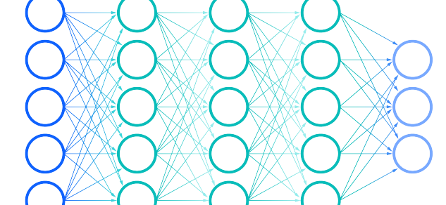

|  | Joel Newswanger's Machine Learning SkillsSkills demonstrated: Python, Jupyter, Pandas, Numpy, Keras, Tensorflow, AWS EC2, tqdm, OpenCV, Convolutional Neural Network Classification & Regression, Training data collection and preprocessing. |
| Home | Python | Geographic Information Systems | Web Development |
This project is both my capstone project for the Nanodegree program and my entry in a Kaggle competition. The challenge was to visually identify plant seedlings. I used a convolutional neural network and acheived a high accuracy on both the test data and real world data.
Software used: python, jupyter, pandas, numpy, keras, tensorflow, tqdm
Skills used: OpenCV, Canny transform, ROI, Hough lines.
Using deep learning to classify images of german traffic signs.
Skills used: Keras, Image preprocessing/augmentation, Convolutional NN-classification.
Using end-to-end deep learning to control steering angle based on video in simulation.
Skills used: AWS EC2, Conv NN-regression, Data collection